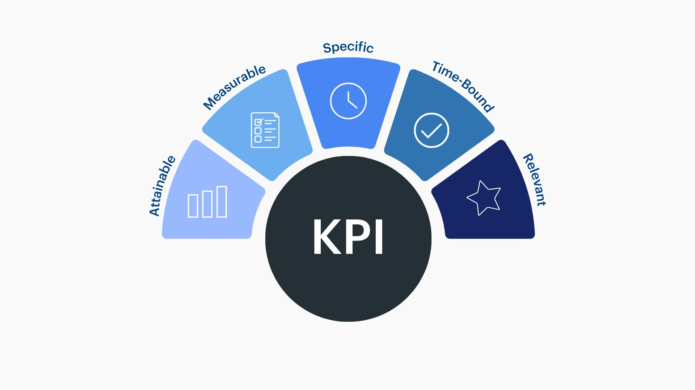

Construction d'Indicateurs de Performance (KPIs)

🔍 AgrandirCadre du projet & Objectifs
Conception et calcul de KPIs métier à partir de données d'entreprise. Apprendre à sélectionner des indicateurs SMART, à les calculer et à les présenter pour faciliter la prise de décision.
Étapes de réalisation
Identification des KPIs
Analyse du contexte métier pour sélectionner des indicateurs SMART répondant aux besoins de pilotage.
Calcul et mise en forme
Formules de calcul, mise en forme avec codes couleur pour signaler les écarts par rapport aux cibles.
Défense des choix
Justification des KPIs retenus : pourquoi ceux-ci, quelles décisions permettent-ils de prendre concrètement ?
Ce que j'en retire
Un KPI répond à une question décisionnelle
Construire un indicateur sans savoir quelle décision il va éclairer, c'est construire un outil sans usage. Toujours partir du besoin décisionnel.
💡 Ce que j'ai retenu
Moins d'indicateurs, mieux ciblés, vaut mieux qu'un tableau saturé. La pertinence prime sur l'exhaustivité.
Ce que ça m'apporte en entreprise
Construire des KPIs pertinents est une mission récurrente pour tout data analyst ou contrôleur de gestion. La capacité à identifier les bons indicateurs — pas tous les indicateurs — et à les présenter de façon à guider une décision est ce qui distingue un analyste qui crée de la valeur d'un analyste qui produit des tableaux.
Positionnement par rapport aux ACs
| Apprentissage Critique | Statut | Commentaires |
|---|---|---|
| AC13.03 Mesurer l'importance de mettre en évidence des résultats clés par des indicateurs pertinents |
A | KPIs construits avec les critères SMART, chacun relié à une décision concrète du commanditaire. |
| AC23.03 Saisir la nécessité de choisir des indicateurs pertinents pour communiquer sur les résultats |
A | Présentation centrée sur les indicateurs les plus impactants, avec justification des seuils retenus. |